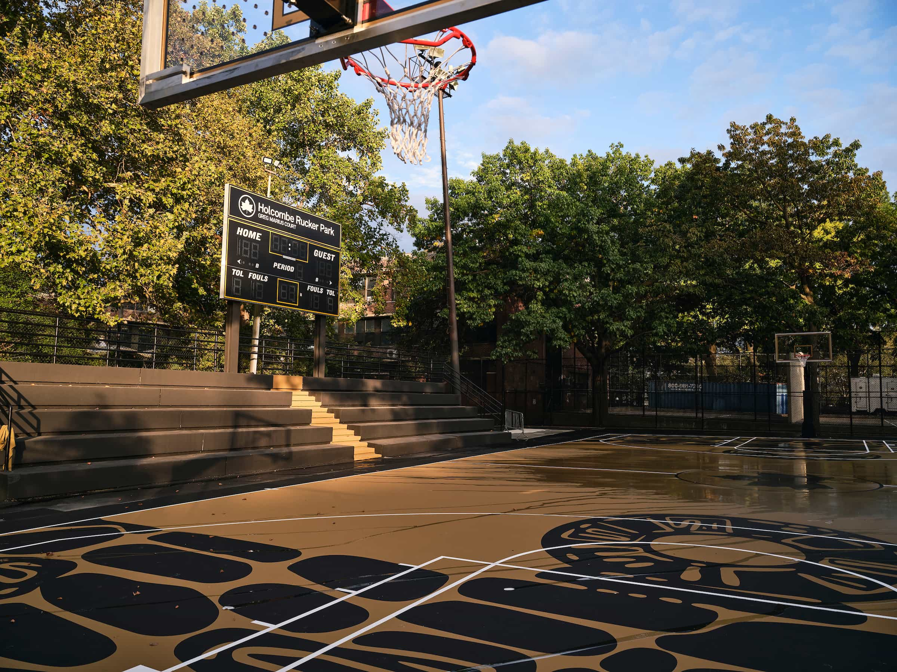

Rucker Park
Rucker Park is an iconic street basketball court located in Harlem, New York. It is renowned for its significance in the streetball culture, where many NBA legends have honed their skills.
Rucker Park is an iconic street basketball court located in Harlem, New York. It is renowned for its significance in the streetball culture, where many NBA legends have honed their skills.